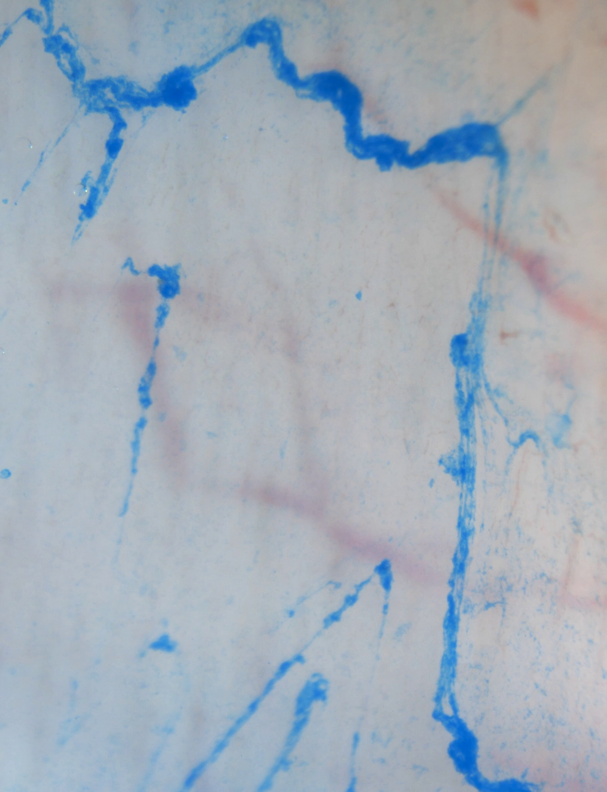
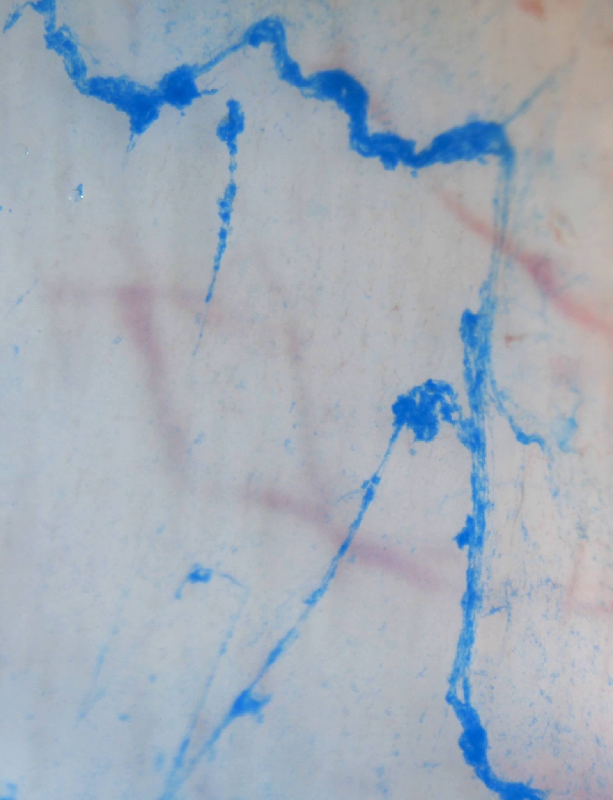
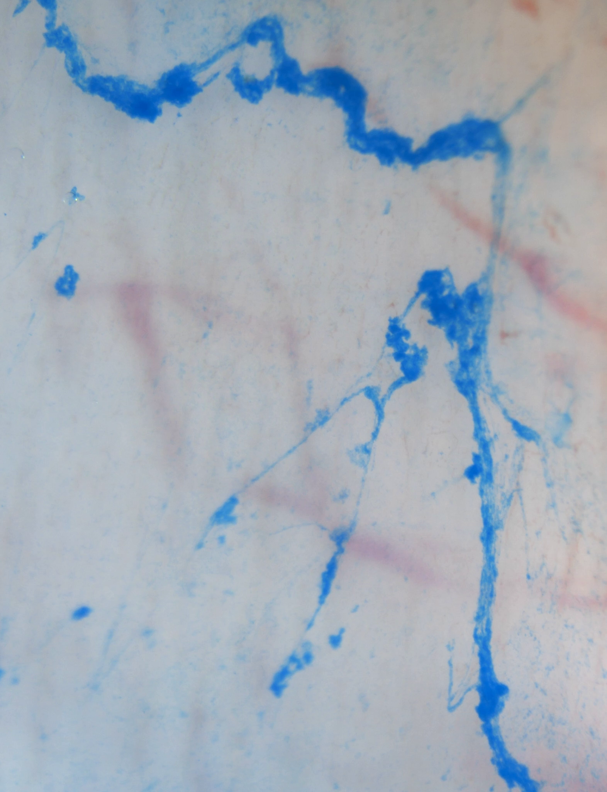

Mucus bundles moving over an exposed airway surface
Blue-stained mucus strands and aggregates change position over an opened, explanted weaned-pig tracheal surface. This stereomicroscope observation resolves bundle motion; individual cilia and the depth of airway-surface liquid are not resolved.
Playback starts paused. Controls inspect publication-file seconds. Native pixels changes display size only; focus the player and use arrows or Home/End to pan within it.

Blue foreground: Alcian-Blue-stained bundled mucus, as identified by the source. Pale background is the exposed mucosal field; it does not identify individual goblet cells or cilia.
Preparation and direction: opened, pinned ex-vivo pig airway; methods include distal trachea/proximal bronchi. The source describes upward image transport; no new anatomical axis or metric scale is assigned.
Two timing records remain distinct. The study’s own supplement describes a five-minute recording at 16× normal speed. The delivered MP4 contains 301 frames at 20 fps and lasts 15.05 seconds. Container PTS starts at 0.05 s (frames 0/150/300: 0.05/7.55/15.05 s). The experiment-to-export mapping is unresolved; controls show container/file time, without a biological speed or acquisition-interval conversion.
Reading the observed changes
- At frame 0, blue bundles and aggregates span the field in several orientations.
- At frame 150 (container PTS 7.55 s), bundle profiles and aggregate positions differ from the first frame. Some strands appear more stationary than others.
- At frame 300 (container PTS 15.05 s), further positional and shape changes are visible. These snapshots support qualitative movement, not a measured clearance rate or goblet-cell attachment mechanism.
Euthanized female weaned pigs (8–12 kg); opened/pinned tissue, Alcian Blue, warmed oxygenated buffer and an air–liquid interface. These are not intact human observations. Neither molecular mucin identity nor goblet-cell attachment causality is resolved. The article’s 500 µm figure bar is not transferred to this uncalibrated movie.
Bos MF, Ermund A, Hansson GC & de Graaf J (2023), Goblet cell interactions reorient bundled mucus strands for efficient airway clearance, PNAS Nexus 2:pgad388, Movie S1 · CC BY 4.0. Complete unchanged 1572 × 2048 H.264 publication MP4; posters are full decoded source frames. This separate Bos observation is not registered to human ALI cultures, SEM, MRI or any simulation.
Three unchanged source frames
Frame indices are zero-based. Container presentation timestamps (PTS) begin at 0.05 s; elapsed time since the first decoded frame is 0.05 s less. Neither is an experiment clock.

